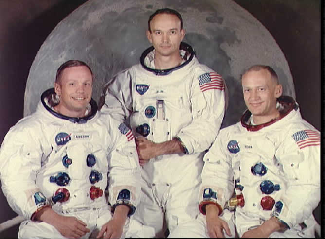
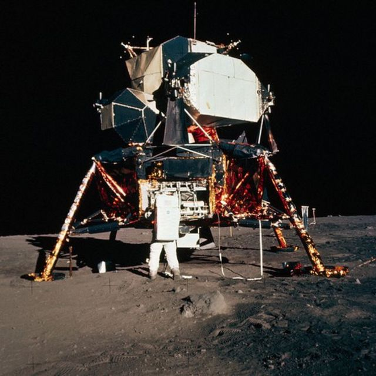

|

|
A finales de la década de 1960, la NASA se enfrentó a una decisión que podría haber cambiado el destino de nuestra especie.
Después de la llegada del Apolo 11 de la Luna, los tres astronautas de la misión esperaban a ser recogidos dentro de su cápsula, flotando en el océano Pacífico, con mucho calor e incómodos.
Los trabajadores de la NASA decidieron asistir a sus tres héroes nacionales rápidamente. Sin embargo, existía una pequeña posibilidad de desencadenar una invasión de microbios alienígenas mortales en la Tierra.
Otro ejemplo sucedió un par de décadas antes, cuando un grupo de científicos y militares se encontraron ante un punto de inflexión similar.
Mientras esperaban para observar la primera prueba de arma atómica, se dieron cuenta de un resultado potencialmente catastrófico. Existía la posibilidad de que sus experimentos incendiaran accidentalmente la atmósfera y destruyeran toda la vida en el planeta.
|

|